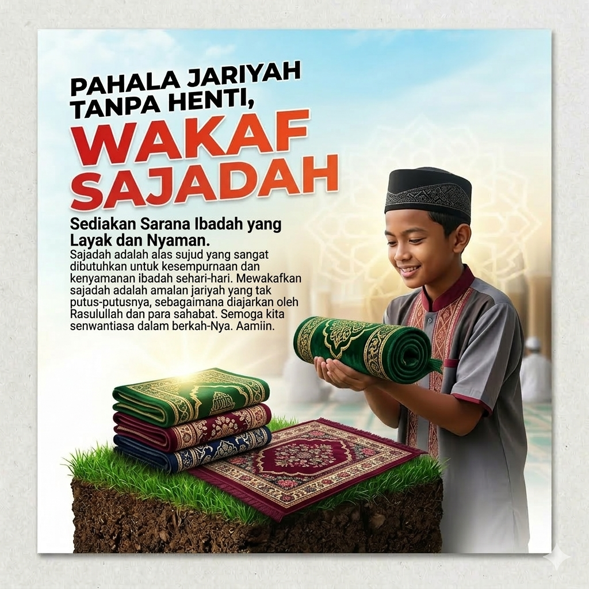

Melalui program ini, para santri penghafal Al-Qur'an di Ponpes Al Ishlah Jombor dapat beribadah dengan lebih nyaman. Foto di atas menunjukkan aktivitas santri yang bahu-membahu merapikan sajadah baru hasil donasi Anda.
"Setiap sujud santri di atas sajadah ini, pahalanya akan terus mengalir kepada Anda."